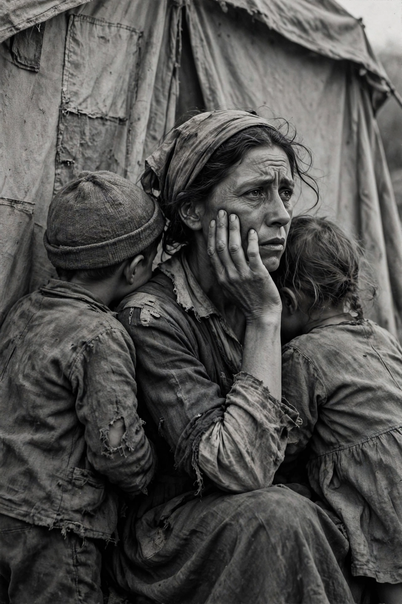

Dorothea Lange

Migrant Mother (1936): Florence Owens Thompson, hand to her chin, two children leaning on her shoulders, Nipomo, CaliforniaDorothea Lange (26 May 1895 – 11 October 1965) was an American documentary photographer whose work for the Farm Security Administration during the Great Depression — above all Migrant Mother (1936) — became the defining imagery of the era and shaped the course of documentary photography.
Lange was born Dorothea Margaretta Nutzhorn in Hoboken, New Jersey, contracted polio at seven, which left her with a limp, and trained in photography in New York and San Francisco, where she ran a successful portrait studio before the Depression turned her camera to the streets.
The FSA years
Hired by Paul Taylor (later her husband) and then by Roy Stryker's FSA photographic unit, Lange travelled the South and West documenting sharecroppers, dust-bowl refugees and migrant camps: White Angel Breadline (1933), the Migrant Mother sequence at a Nipomo pea-pickers' camp, Tractored Out, and the famous caption-rich field notes were as important as the negatives. Her 1939 book with Taylor, An American Exodus, is a landmark of the documentary book.
Later work
In 1942 Lange photographed the forced removal of Japanese Americans for the War Relocation Authority; the army impounded most of the images, which questioned the policy, and they were little seen for decades. After the war she co-founded the magazine Aperture (1952) and travelled in Asia and Ireland on assignment. She died in 1965, a year before her retrospective at the Museum of Modern Art.